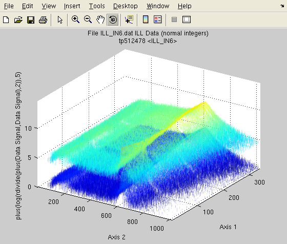

iFit: Mathematical operators
- A reminder on axes, monitors and signal
errors
- Unary operators
- Binary operators
- statistics, fitting and peak
searching
- interpolation/projections/integration/sum/combination
Commands we use in this page: iData, maths
A reminder on axes,
monitors and signal errors
The iData objets have been designed keeping in mind that any
measurement Signal is
recorded as a function of Axes
(e.g. time, energy, ...) and corresponds to a measurement quantity
(e.g. flux, integrated time for the measurement, ...), which we label
as a Monitor. In addition,
the Signal is attached to an uncertainty Error, which provides a
measurement of the accuracy of the Signal. You may get more details
about these definitions in the iData object
description page.
The way all of these are used is listed below:
- All mathematical methods propagate the Error together with the Signal, assuming Error
distributions are Gaussian. The sections below detail the way Errors
are propagated.
- Binary operators use the Monitor
value to weight the respective ratio when performing the operation. The
Monitor value is also
affected by Matematical operations that renormalize the Signal. The Monitor is usually a value larger
than 1.
- The Axes are used in
binary operators to determine intersection of Signal ranges. A rebinning of
objects is automatically performed when the Axes sampling do not match.
Unary operators
All unary operators apply on a single object, element-by-element.
| Operator |
Signal
|
Error
|
Monitor
|
Comments
|
abs
|
| Signal |
|
|
|
Absolute value
|
acos
|
cos-1(Signal)
|
-Error/(√(1-Signal²))
|
|
Arc cosine. Signal should be
[-1:1]
|
asin
|
sin-1(Signal)
|
Error/(√(1-Signal²)) |
|
Arc sine. Signal should be [-1:1] |
atan
|
tan-1(Signal)
|
Error/(1+Signal²) |
|
Arc tangent.
|
cos
|
cos(Signal)
|
-Error*sin(Signal)
|
|
Cosine. Signal is in [rad]
|
sin
|
sin(Signal)
|
Error*cos(Signal)
|
|
Sine. Signal is in [rad] |
tan
|
tan(Signal)
|
Error/cos²(Signal)
|
|
Tangent. Signal is in [rad] |
exp
|
eSignal
|
Error*eSignal |
|
Exponential
|
log
|
ln(Signal)
|
Error/Signal
|
|
Logarithm (Neperian, base 2)
|
log10
|
log10(Signal)
|
Error/(ln(10)*Signal)
|
|
Logarithm (base 10) |
sqrt
|
√Signal |
Error/(2√Signal) |
√Monitor |
Square root
|
ctranspose and '
|
Signal'
|
Error'
|
Monitor' |
Complex conjugate transpose
|
transpose and .'
|
Signal.'
|
Error'
|
Monitor'
|
Non conjugate transpose
|
floor
|
floor(Signal)
|
floor(Error)
|
|
Round towards -∞ Make it integer.
|
| ceil |
ceil(Signal)
|
ceil(Error)
|
|
Round towards +∞ Make it integer. |
round
|
round(Signal)
|
round(Error)
|
|
Round towards nearest integer.
|
sign
|
sign(Signal)
|
0
|
|
Sign of Signal elements.
|
uminus and -
|
-Signal
|
|
|
Opposite
|
imag
|
Im(Signal)
|
|
|
Imaginary part
|
real
|
Re(Signal)
|
|
|
Real part
|
Here is an example using unary operators:
>> a = iData([ ifitpath 'Data/ILL_IN6.dat' ]);
>> b = [ log(a) floor(a) sqrt(a) ]
b = array [1 3] iData object:
Index [Tag] [Dimension] [Title] [Last command] [Label]
1 tp362134 [340 1024] 'File ILL_IN6.dat ILL Data (n...' tp362134=log(tp36213...
2 tp362140 [340 1024] 'File ILL_IN6.dat ILL Data (n...' tp362140=floor(tp362...
3 tp362145 [340 1024] 'File ILL_IN6.dat ILL Data (n...' tp362145=sqrt(tp3621...
The 1/Signal is obtained with
the binary operator division.
The sqr operator is a short
cut for power 2.
Binary operators
The binary operators take two objects, and perform a relational
operator, element-by-element. In the following we use the notations:
- s1, e1 and m1 are the Signal,
Error and Monitor of
the 1st object, resp.
- s2, e2 and m2 are the Signal,
Error and Monitor of
the 2nd object, resp.
- s3, e3 and m3 are the Signal,
Error and Monitor of
theresulting object, resp.
When not defined the Monitor
is set to 1, and the Error is
set to √Signal.
Operator
|
Signal
(s3)
|
Error
(e3)
|
Monitor
(m3)
|
Description
|
plus and +
|
m3*(s1/m1+s2/m2)
|
√[(e1/m1)²+(e2/m2)²]
|
m1+m2
|
addition
|
minus and -
|
m3*(s1/m1 - s2/m2) |
√[(e1/m1)²+(e2/m2)²] |
m1+m2 |
subtraction
|
times and *
|
s1 * s2 |
s3*[(e1/s1)²+(e2/s2)²] |
m1*m2
|
multiplication
|
divide and /
|
m2²*(s1/s2) |
s3*[(e1/s1)²+(e2/s2)²] |
m1*m2 |
division
|
combine and \
|
s1+s2
|
√[e1²+e2²] |
m1+m2
|
Monitor
weighted addition
|
power and ^
|
m3*(s1/m1)(s2/m2)
|
s3*[s2*e1/s1+e2*ln(s1)]
|
m1m2
|
exponentiation
|
All these operations find intersection between objects (when axes are e.g. partly overlapping), rebin
objects when axes have a different sampling, and then perform the
mathematical operation.
The combine operation performs a weighted sum, using the Monitor as the weight. This is of
great use when merging results from similar experiments, possibly
performed in slightly different configurations (e.g. counting time, statistics,
...). This means that combining two data sets is usually more complex
than
just adding the two Signals, when axes are not exactly the same and
Monitors are not equivalent.

The following example compares the combine
operation wit
h the sum. The two initial data sets have a Monitor=1, so that the
result is indeed the same. We plot both results onto the same figure,
with transparency, and log-scale, shifting the 2nd plot above the first
one.
>> a = iData([ ifitpath 'Data/ILL_IN6*.dat' ]);
>> b=combine(a)
>> c=(a(1)+a(2))/2;
>> plot([ log(b) log(c)+5 ]); alpha(0.15);
Changing the Monitor of one of the two objects will affect the relative
weight used for the summation during the combine operation. The '\' operator
is used as a shortcut for combine, so
that
combine(a,b) is the same
as a\b.
statistics, fitting and peak
searching
A few methods have been written to analyze the Signal from objects.
This includes peak searching, first and second moment distributions,
and model fitting.
Statistics
The usual min, max, mean, and median methods can be applied onto
iData objects, and return the corresponding statistics for the Signal,
usually selecting one analysis for the dimension.
The std method provides an
easy way to determine Gaussian widths of Signal distributions along axes
Peak searching and
model fitting
interpolation/projections/integration/sum/combination
E.
Farhi - iFit/Math operators - $Date:
2010-11-22
14:15:30
$
$Revision:
1.2 $ - back to
Main iFit Page